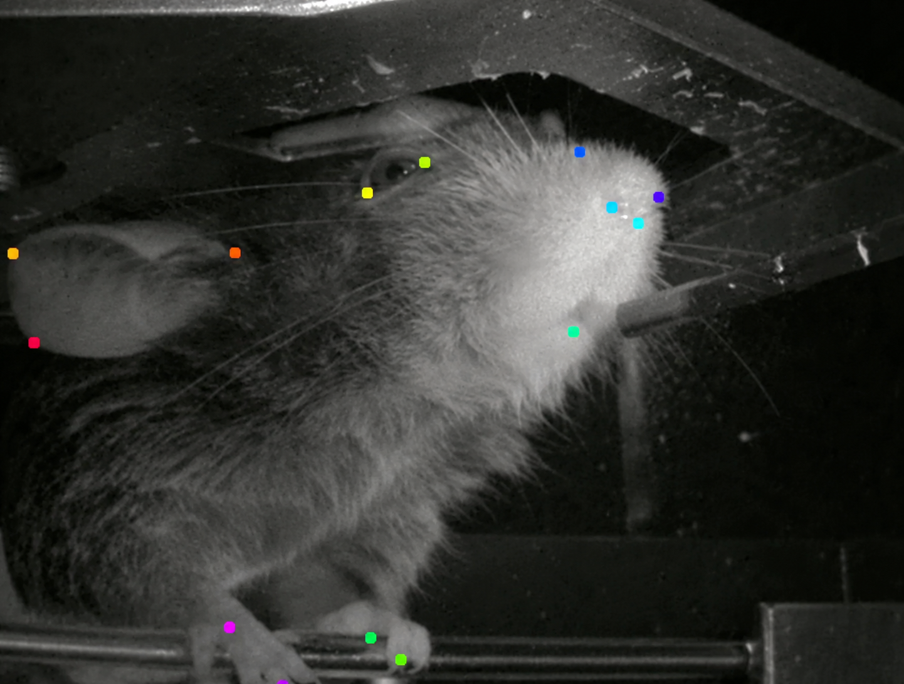
開催趣旨
本ハッカソンは、文部科学省 学術変革領域研究(A)「行動変容生物学」の取り組みとして、研究者を目指す若手（大学院生・学部生・ポスドク等）を対象に開催します。
3日間のイベントでは、マウスの行動実験データと対応する神経活動データを包括した「BraiDyn-BCデータベース」を用い、行動変容のメカニズムに関する新たな解析手法やツールの利用・開発に取り組みます。
チーム（5名程度）ごとに専門のチューターがつきますので、神経科学の初学者も歓迎します。最終日にはチームで作業した内容の発表と質疑応答を行い、主に学術的な視点からフィードバックを行います。
作業内容
学術変革領域A・行動変容生物学の総括班で作成したマウスの大規模な神経活動と行動のデータベース「BraiDyn-BC（Brain Dynamics and Behavior Change）データベース」を利用したデータ解析を行っていただく予定です。具体的に解析したい内容がある場合は、チューターと相談の上で補助します。ない場合でも、こういったことに興味があるということを参加登録で記入していただければ、こちらでチーム編成を行いテーマを設定いたしますので、気軽にご参加ください。
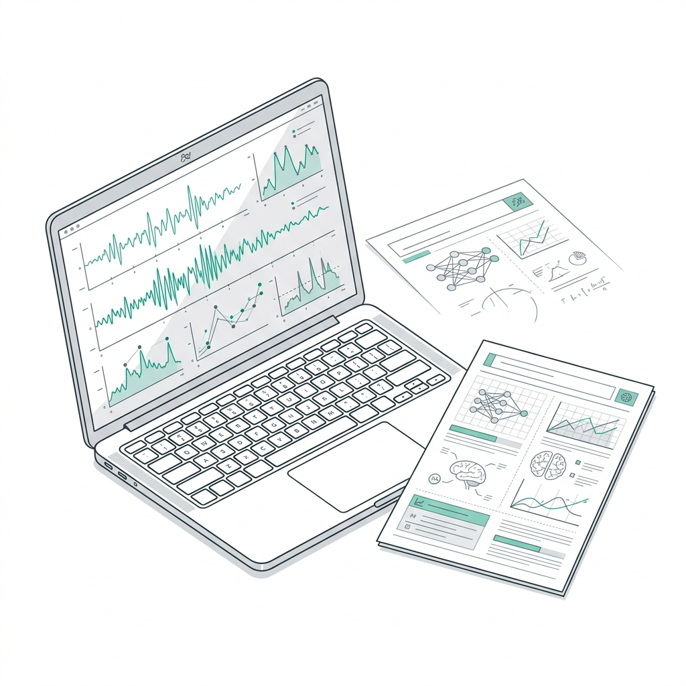
1日目チュートリアル
具体的には、動画データから身体キーポイントを抽出するDeepLabCut、1光子Ca2+イメージングの動画像の位置合わせを行うMesoNet、神経活動データの標準フォーマットのNeurodata Without Boaders(NWB)の取り扱い、行動タスクの分析方法、神経活動や行動との関連の解析法などが挙げられます。これらのテーマに関して1日目にチュートリアル発表を行います。
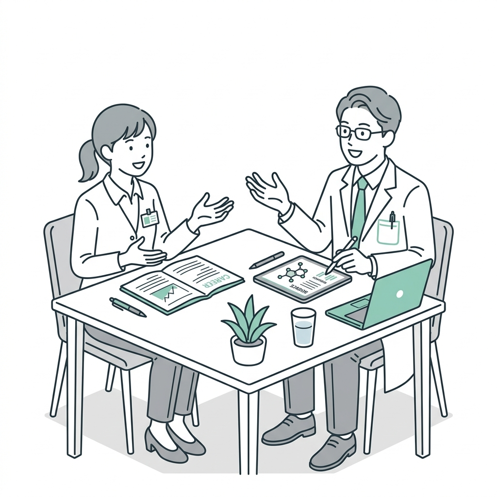
2日目キャリア座談
2日目には、現場の研究者たちを交えて「研究者のキャリアとは？」をテーマに、キャリアパスや研究現場のリアルについて語り合う企画を予定しています。今後の進路として研究活動に興味がある方には、リアルな経験談や実際的な話を聞く良い機会になると思います。
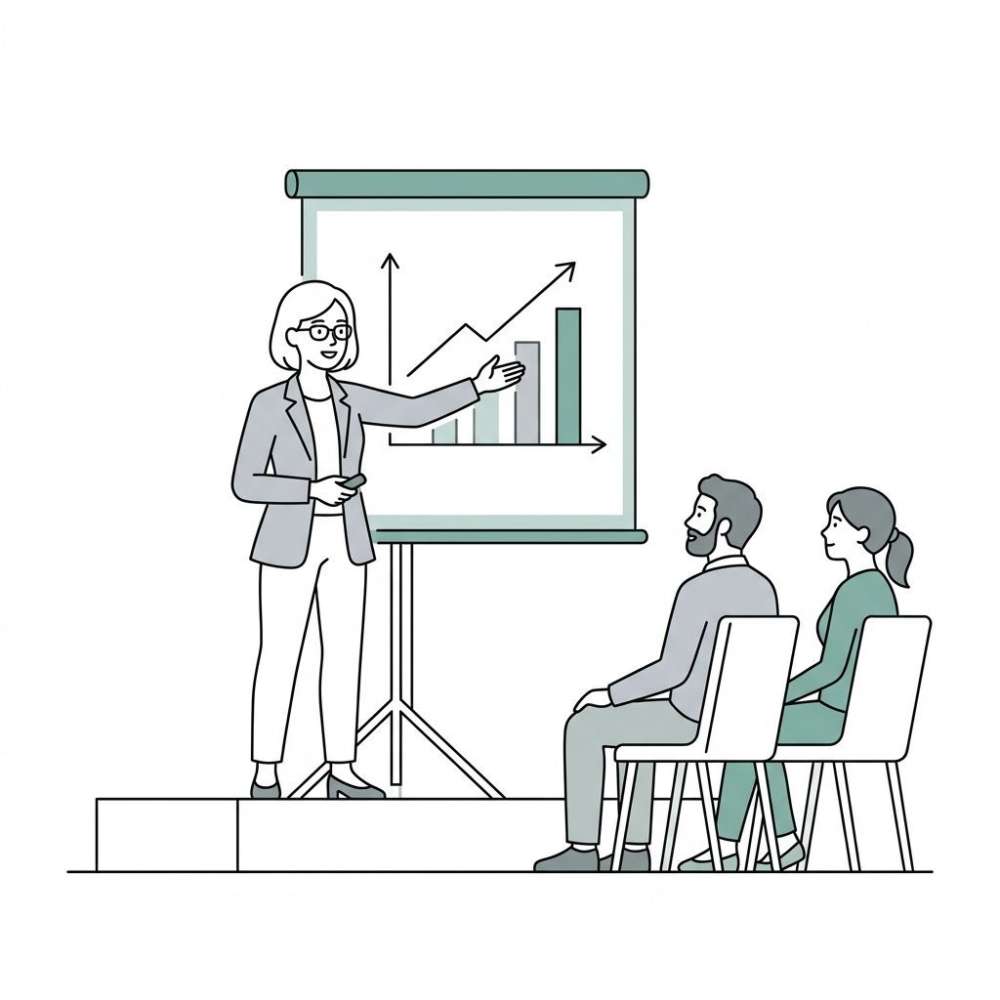
最終日成果発表
最終日にはチームで作業した内容をまとめて、10-15分程度の発表や質疑応答を行っていただく予定です。運営委員からの点数的な評価は行いませんが、主に学術的な視点からフィードバックを行う予定です。また、参加者からの質問も歓迎しますので、盛り上げていただければと思います。
全体として今回のハッカソンは経験者だけでなく初学者を歓迎しますので、神経科学に興味のある方は奮ってご参加ください。
前回の開催風景（第1回ハッカソン）
2025年2月に開催された第1回ハッカソンの様子です。全国から集まった若手研究者・大学院生・学部生がチームを組み、講義やディスカッションを通じて熱心に開発に取り組みました。
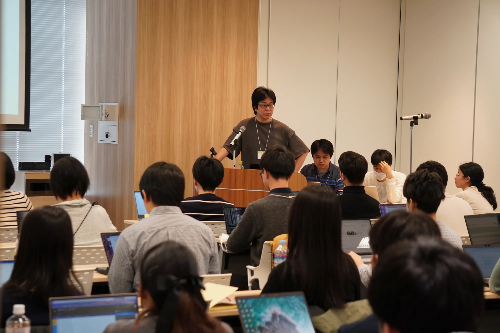
講義・全体セッション全体講義・導入セッション
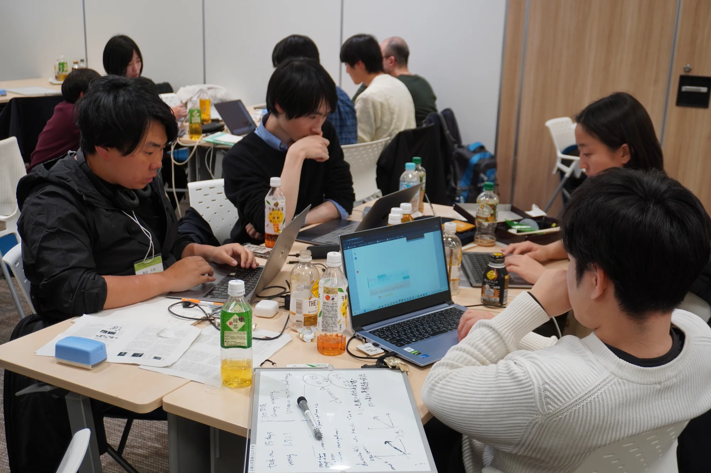
チーム開発・議論グループワーク・解析開発
 第1回 集合写真
第1回 集合写真
第1回ハッカソン 参加者集合写真
データベース・リソース
BraiDyn-BC Database
マウスの学習行動と全脳神経活動を包括した大規模マルチモーダルデータセットです。仕様やデータ構造の詳細をご確認いただけます。
BraiDyn-BC GitHub
行動変容生物学ハッカソンおよび関連解析パイプライン、各種オープンソースツール群が公開されている公式GitHubオーガニゼーションです。
チュートリアル資料
事前学習用チュートリアルコード、Google Colaboratoryノートブック、解説スライド、サンプルデータなどの配布資料一式を格納しています。
データ論文
本ハッカソンで活用する広域Ca2+イメージングと行動変容データを詳細に解説した、Nature Scientific Data誌掲載の公式データ論文です。
タイムテーブル
事前準備
チュートリアル ＆ Question Grammar
ハッカソンに向けた基礎知識の共有と、研究の「問い」の立て方を学びます。データベース構造やColabチュートリアルコードを解説。（※参加できない方向けに後日YouTube公開）
Google Formでのアンケート提出・組分け提案
事前アンケートにご協力ください。提出いただいた興味関心をもとに、運営側でチームの組分け（5名程度）を提案します。
受付 ＆ 希望者のみ昼食会
11:30開場・受付開始。希望者に無料でお弁当を提供します（本プログラムは13:00より開始）。
開催にあたって
中江 健（福井大学）行動変容生物学 Introduction
近藤 将史 ＆ 瀬原 慧祐（東京大学）テーマ相談会 ＋ 作業開始
チームごとに専門チューターとディスカッションを行い、解析テーマを決定・具体化します。
チーム作業
チームメンバーと協力しながらデータの前処理や探索的解析を進めます。
懇親会（ケータリング交流会）
会場内での立食交流会。研究者・チューター・参加者同士で自由に語り合いましょう。（会費 4,000円 / ケータリング・ソフトドリンク付、アルコール類は実費負担）
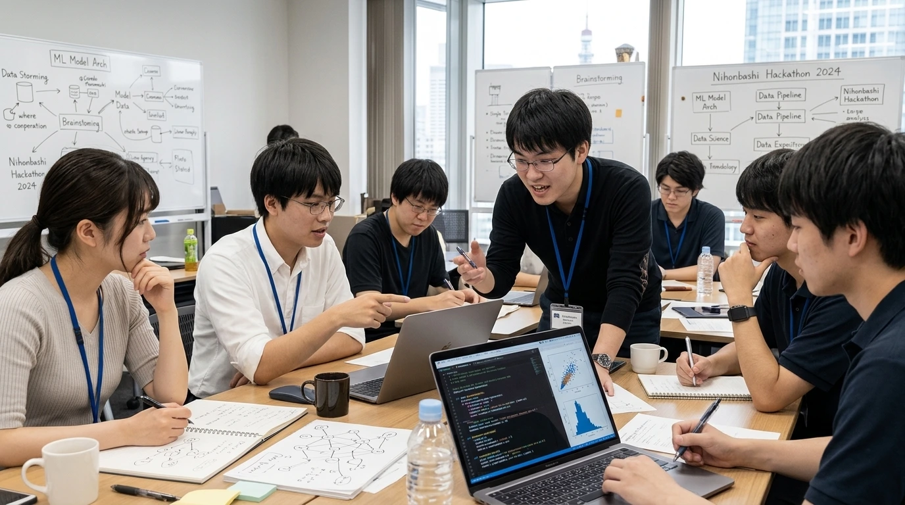
Day 2 Deepenチーム作業
解析アルゴリズムの実装や仮説検証を本格化させます。
昼食会（田和辻 Lunch on Seminar）
田和辻 可昌（全脳アーキテクチャ・イニシアティブ）昼食を取りながら先端トピックについての講演を聴講します。
田和辻企画 hands-on.
田和辻 可昌（全脳アーキテクチャ・イニシアティブ）実践的なハンズオンセッションを実施します。解析手法やツールへの理解をさらに深めます。
チーム作業
ハンズオンの知見も取り入れながら、チーム開発と検証を深めます。
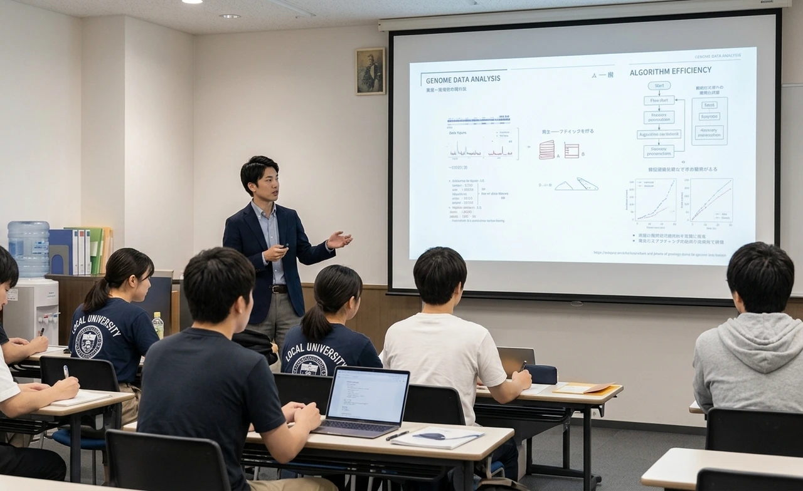
Day 3 Shareチーム作業
解析の総仕上げと発表用データの整理を行います。
昼食会
各自昼食休憩・チーム内リフレッシュ。
発表のための準備相談
成果発表に向けたスライド作成と最終ディスカッション・リハーサル。
休憩
ハッカソン発表会
各チーム10〜15分程度の発表と質疑応答。点数評価ではなく、学術的な視点から有意義なフィードバックを行います。
おわりに
松崎 政紀（東京大学）参加案内
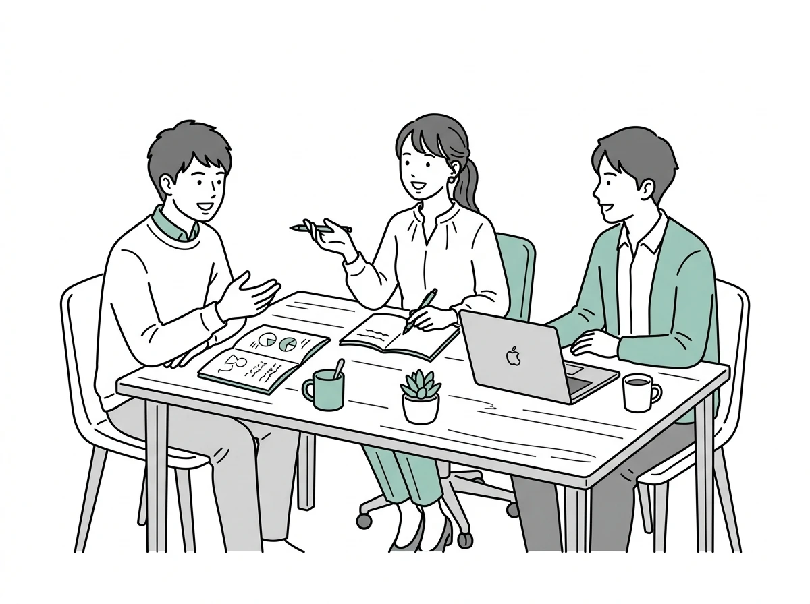
対象者
神経活動や行動データ解析に興味のある若手（大学院生・学部生を含む）やポスドク。定員40名程度。初学者も歓迎します。
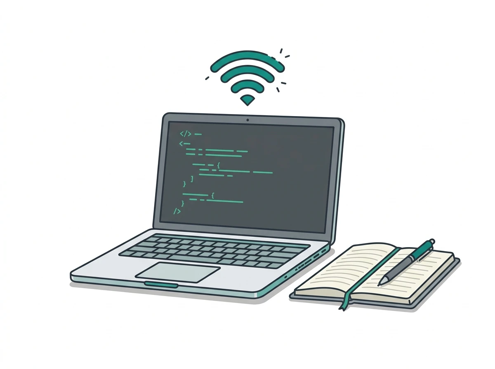
環境・持ち物
WiFiでGoogle Colaboratoryが動くノートPC（Windows, Mac, Linux）をご持参ください。使用言語はPythonです。
対応OS：Windows / macOS / Linux
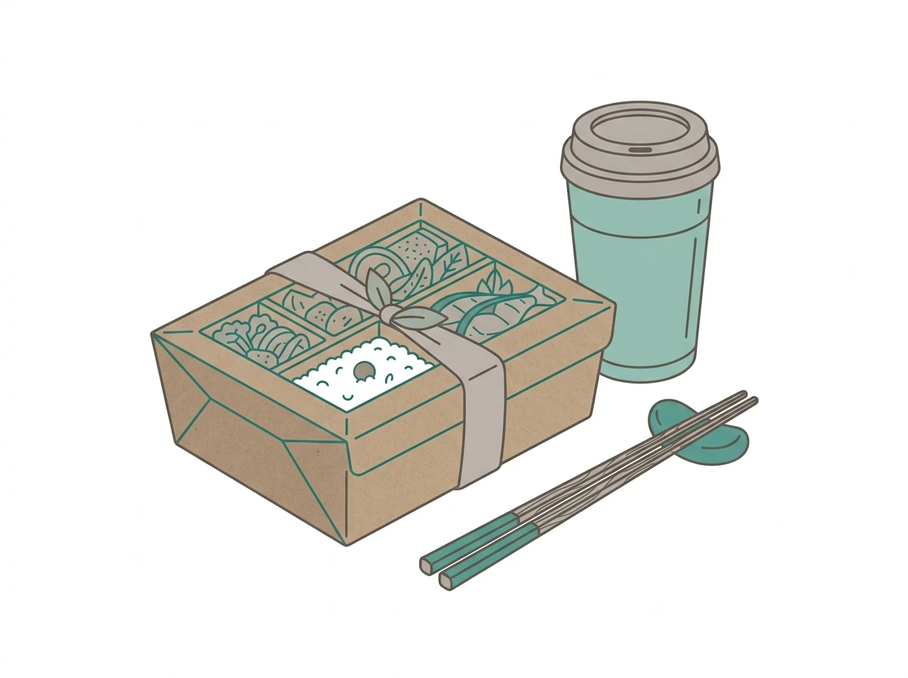
参加費・実費
※アルコール類、および旅費・宿泊費等は各自負担となります。
会場アクセス
日本橋ライフサイエンスハブ
〒103-0022 東京都中央区日本橋室町1-5-5 室町ちばぎんビル8階
 会場：室町ちばぎんビル 8階
会場：室町ちばぎんビル 8階